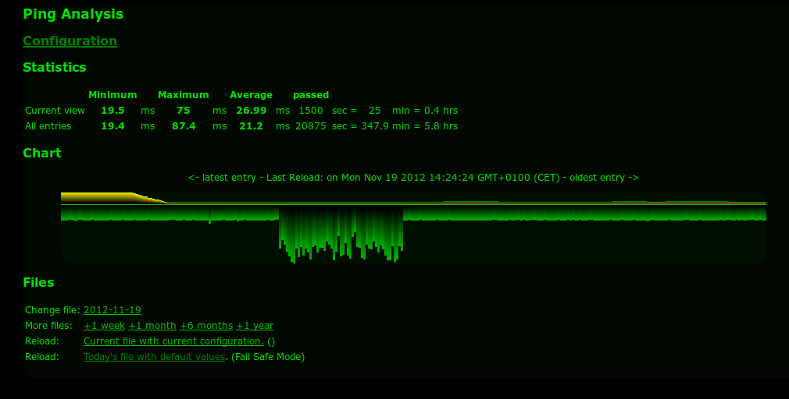

Ping-Visualisierung und -Analyse
Dies ist die Situation, mit der ich konfrontiert bin: Ich nutze einen Internetzugang, der sich nicht zuverlässig anfühlt. Manchmal ist er wirklich schnell, manchmal fühlt er sich einfach sehr unzuverlässig an. Und ich weiß nie genau, welcher Teil gerade versagt: Ist es die Anwendung, die langsam ist, ist es das WLAN, ist es der Internetzugang?
Was ich also gesucht habe, ist eine zuverlässige, langfristige Messung der Internetzugangsgeschwindigkeit. Mit Geschwindigkeit meine ich hauptsächlich die Round-Trip-Time/Latenz. Ich habe mir viele Tools angesehen, große (die aus kompletten Ökosystemen wie Nagios oder Icinga stammen) und kleine (z.B. Netzwerküberwachung direkt auf Ihrem PC oder Mac). Die großen sind zu viel Arbeit und zu viel, was gelernt, verstanden und installiert werden muss. Die kleinen beantworten meine Frage nicht, da sie keine langfristige Überwachung und Aufzeichnung durchführen. Und ich mag keine komplexen Dinge.
Dann habe ich etwas gefunden, das im Wesentlichen genau das ist, wonach ich gesucht habe. Anders formuliert: Wenn ich selbst etwas zusammengestellt hätte, wäre es genau das gewesen, was ich gebaut hätte: Es heißt Ping-Visualisierung und -Analyse und basiert auf 2 Komponenten:
- Ein einfaches Skript, das die Ping-Zeiten protokolliert (und mit einfach meine ich wirklich einfach!)
- Eine HTML-Seite mit etwas JavaScript, das die Ping-Zeiten im Laufe der Zeit visualisiert.
Sie können den Ping-Logger auf extrem einfacher Hardware laufen lassen. Er kann Tag und Nacht laufen und Daten sammeln. Das Format ist einfach. Ein Beispiel:
Fri Jan 8 15:14:49 ICT 2016: 64 bytes from 185.40.248.50: icmp_seq=89 ttl=53 time=310.716 ms
Fri Jan 8 15:14:54 ICT 2016: 64 bytes from 185.40.248.50: icmp_seq=90 ttl=53 time=310.349 ms
Fri Jan 8 15:14:59 ICT 2016: 64 bytes from 185.40.248.50: icmp_seq=91 ttl=53 time=312.787 ms
Fri Jan 8 15:15:04 ICT 2016: 64 bytes from 185.40.248.50: icmp_seq=92 ttl=53 time=312.805 ms
Fri Jan 8 15:15:09 ICT 2016: 64 bytes from 185.40.248.50: icmp_seq=93 ttl=53 time=311.273 ms
Fri Jan 8 15:15:14 ICT 2016: 64 bytes from 185.40.248.50: icmp_seq=94 ttl=53 time=311.371 ms
Fri Jan 8 15:15:19 ICT 2016: 64 bytes from 185.40.248.50: icmp_seq=95 ttl=53 time=312.096 ms
Fri Jan 8 15:15:24 ICT 2016: 64 bytes from 185.40.248.50: icmp_seq=96 ttl=53 time=313.387 ms
Fri Jan 8 15:15:29 ICT 2016: 64 bytes from 185.40.248.50: icmp_seq=97 ttl=53 time=310.404 ms
Fri Jan 8 15:15:34 ICT 2016: 64 bytes from 185.40.248.50: icmp_seq=98 ttl=53 time=311.076 ms
Fri Jan 8 15:15:39 ICT 2016: 64 bytes from 185.40.248.50: icmp_seq=99 ttl=53 time=312.640 ms
Ziemlich einfach, oder?! Ein einfaches ping mit einem Zeitstempel davor. Und das JS-Zeug liest es und erstellt daraus ein einfaches Diagramm:

Ich musste nur ein paar kleine Dinge anpassen, damit es auf meinem Mac läuft (die ping-Syntax stammte aus einem anderen Unix-Dialekt).
Was kommt als Nächstes?
Hier ist, was ich plane zu verbessern (mal sehen, ob das wirklich passiert):
- Die Quellen in GIT einpflegen
- Das Diagramm verbessern:
- Die Farben sind mir etwas seltsam...
- Es fühlt sich verkehrt herum an
- Beschriftungen auf der y-Achse hinzufügen
- Vielleicht mehr so in der Art
- Vielleicht log stash als Visualisierung in Betracht ziehen...
Nachtrag
Auch im Kontext, und weil Java die Programmiersprache des Jahres 2015 ist: Ein Java-Programm zur Verfolgung der Ping-Zeiten zu mehreren Endpunkten